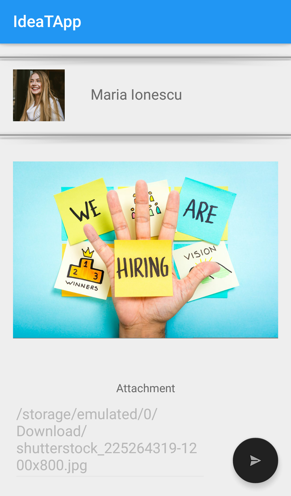

Community Draft
The current document was built as a guide for the users of Ideal Timing application, which is intended for the Human-Computer Interaction university subject. In this document we will present what is the purpose of the application and how an user can schedule his time with it.
Develop a multi-device adaptive and customizable tool – i.e. a (mobile) Web browser extension – able to determine (e.g., learn) and recommend the ideal weekday and time for performing a set of desired actions in a specific context. For example, sending an important e-mail message to the co-workers, updating a Web site in order to increase the number of possible visitors and/or customers, committing the source-code only if a given module was not updated in the last W weeks, etc.
Based on the description above, we chose to build a mobile application which recommends this ideal time for some specific scenarios. These scenarios were found to be more occurent in our every day life and our scope is to help people in need in an efficient and simple manner.
An user can use IdeaT app to schedule sending an email. He/She has to login with Google account (1) and choose the third option from UI: "Send an e-mail" button (2). In this way, if the user will have a full day tomorrow, he/she can write the e-mail and it will be sent at the scheduled time (3), (4). The application is synchronized with Google Calendar. So, if Maria (our user from the storyboard below) works as human resources and she will have meetings or interviews in Calendar and she will not have access to the e-mail, this app will help her to be efficient. The application will suggest the best time after her Calendar is checked (5) and she can verify the status of the action in history screen (6).
 |
||
|---|---|---|
| (1) | (2) | (3) |
 |
||
| (4) | (5) | (6) |

An user can use IdeaT app to schedule uploading a photo on Facebook. The user has to login with Facebook account (1) and choose second option from UI: "Upload a photo" button (2). In the next screen he/she can view some information from his/her own Facebook profile and he/she can select a photo from galerie (3). Then the recommended date and time will be displayed (4). The user can change the date or the time using DateTime Pickers (5), (6). After the date and time are set, the user must press the button Schedule and the photo will be uploaded at the desired date. The user can check the status in the History screen, or directly on Facebook.
|
 | |
|---|---|---|
| (1) | (2) | (3) |
| (4) | (5) | (6) |